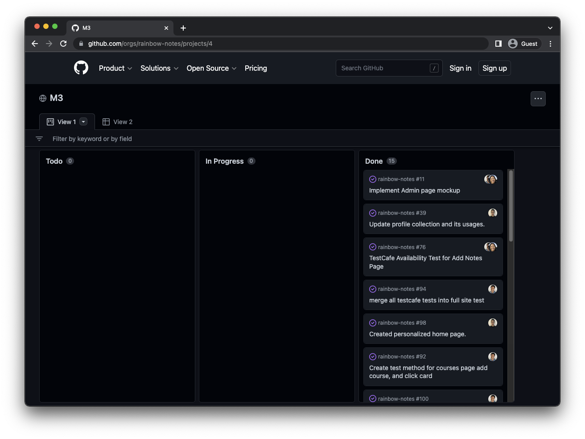

Rainbow Notes
About Rainbow Notes
Rainbow Notes is a website that allows students to uploud their notes for all students in the University of Hawai’i system to see. As students we noticed that during lectues we were taking the same nottes as dozens of other students. This can be time consuming and makes it hard for students to be paying attention to what the lecturer is saying as they would be too focused on writing down what is on the board. A lot of students use the help of websites like Chegg and Course Hero but the problem with those services is that they are paid and are not always reliable, these services also create issues for lecturers as it causes a lot of cheating. Through Rainbow Notes lectures can control what students are posting and by the University of Hawai’iallowing a free resource it can also make students less likley to use paid services like Chegg. Rainbow Notes allows students to uploud their notes which is organized by courses. Of course not all notes are the same so their is a rating system implemented to allow students to choose which notes they would like to study off of. By having these notes students can pay attention in class and add more onto the current notes that they were able to get. This can not only be helpful to current peers but to future students who take the course too.

Group Set Up and Contributions
This project was for an assignment in ICS 314 where we had to devbelop a website. This was created by a gorup of 5 people including me. We tried our best to break up the work evenly, we broke up the work by GitHub projects and issues to create tasks. We actually contribuited to one anothers tasks a lot as whenever one of us ran into issues and were stuck having an outside input was able to fix it. 
Some of the contributions I made towards this project was making the logo, to make the logo I put some clip arts and put it together. One of the most time consuming parts was doing the search bar that can be seen on the list notes page. It took a while to be able to have the search results show, this was time consuming because there were time where it did work and times where it did not. After working on it for a while it was able to fully work with help of my team members.
Goal Achieved
After some time getting used to GitHub issues and reviewing what we had learned over the course we were able to create a fully functional website. We had students review the website to make sure it would be something that students would fine helpful, students that were knowledgeable about web development and had no experience with development reviewed the site. We recieved positive reviews with some reccomendations to create a forgot password and a way for students to delete their own notes if they wish.